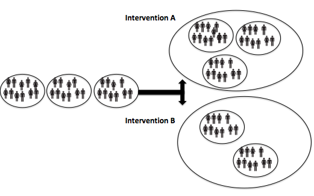
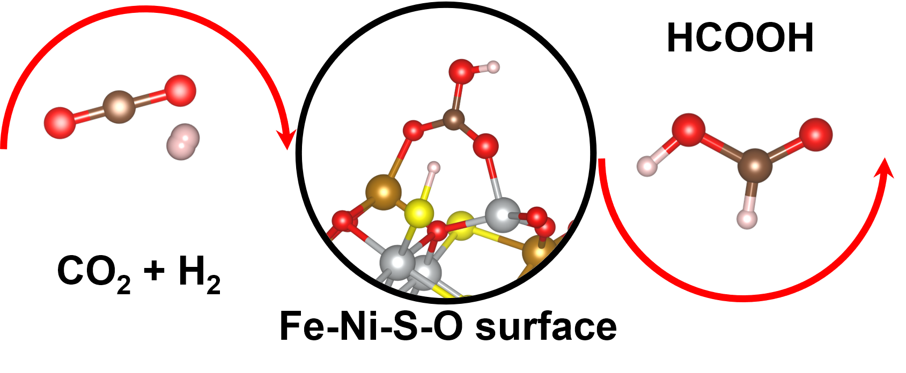

12 days of HPC highlights speed run
Alex Coleman
Research Computing
14th December 2021
On the 1st day of christmas…
- Our first post was from Laura Marsden
- They’re using HPC to study an alternate format for clinical trials called cluster randomisation
Cluster randomized trial
3 french hens
- The 3rd post in our series was from Molly Gravett
- Her work is part of a large inter-Department research group studying the dynamics of tiny protein motors in our bodies
 GIF from XVIVO Scientific animation
GIF from XVIVO Scientific animation
 GIF by Molly Gravett
GIF by Molly Gravett
4 calling birds
- On day 4 of the series we had a post from Serge Sharoff
- He is using the HPC to analyse social media data to identify users at risk from misinformation
COVID-19 misinformation protest
On the 6th day of christmas…
- Soffi Bi wrote the 6th post on using cutting hedge technology
- Her work with the HPC analyses 4,500 hours of birdsong recordings to identify bird calls
An AudioMoth recorder in the wild (Photo by Seb Stroud)
11 pipers piping
- On Day 11 we had a post from David Santos-Carballal
- His work is looking at finding new catalysts for converting carbon dioxide
A diagrammatic example of CO2 catalysts in action
Check out the full stories
- Find the full stories and more blog posts from the 12 days of HPC series on our blog